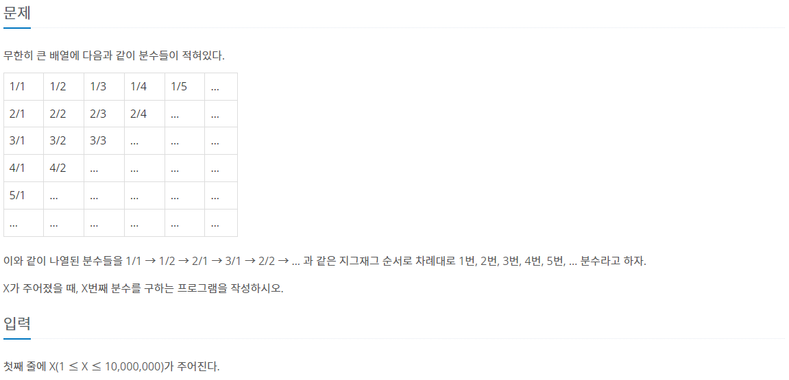
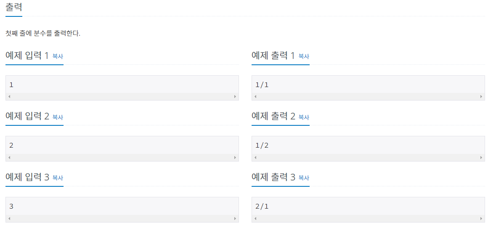

#INFO
난이도 : BRONZE1
출처 : 1193번: 분수찾기 (acmicpc.net)
 
#SOLVE
1. N이 몇 번째 대각선에 위치하는지 구한다.
우선, 입력받은 N이 몇 번째 대각선에 위치하고 있는지 구해야 한다. 예를 들어 입력받은 N이 10이라면 N의 값은 4/1로, 4번째 대각선에 위치한다.

반복문을 돌려서 N의 값이 i보다 작아진 시점에 해당하는 i번째 대각선에 N번째 원소가 존재한다.
//N이 몇 번째 대각선에 존재하는 지 판별
int i = 1;
while (N > i) {
N -= i;
i++;
}
2. N이 존재하는 대각선이 홀수번째인지, 짝수번째인지 구한다.
대각선이 홀수번째 대각선인지, 짝수번째 대각선인지에 따라서 식이 달라진다.
하지만 어차피 짝수번째 대각선의 형태는 홀수번째와 대칭이기에, 분모와 분자만 바꾸어서 출력해 주면 된다.
if (i % 2 == 1) {
cout << i + 1 - N << '/' << N << endl;
}
else {
cout << N << '/' << i +1 - N << endl;
}
#include <iostream>
using namespace std;
int main()
{
int N;
cin >> N;
//몇 번째 대각선 인지 판별
int i = 1;
while (N > i) {
N -= i;
i++;
}
if (i % 2 == 1) {
cout << i + 1 - N << '/' << N << endl;
}
else {
cout << N << '/' << i +1 - N << endl;
}
return 0;
}